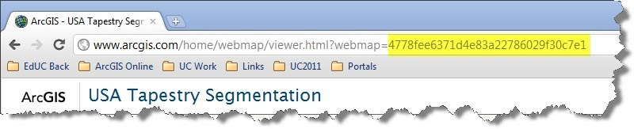

Hide Table of Contents
Hide Table of Contents
The ArcGIS.com Map Viewer allows you to quickly and easily create and share web maps that tell interesting stories about your data. They may explain where people are buying homes, where sea surface temperature is changing, or where elephants migrate in the summer. These maps share information not just data.
In this tutorial, you'll build a sample application that uses the ArcGIS API for JavaScript to build an application that displays a web map from ArcGIS.com.
Build a web map
Web maps typically display a map service with operational data (such as available stands of timber) on top of a map service with reference information (such as imagery or a shaded relief map). Sometimes a reference map service that contains boundaries or labels is placed on top of the other layers to create a "map sandwich": two reference layers with the "meat", or operational data, in between. To build a web map visit the Create a map tutorial.
After creating the web map copy the web map id for use in the rest of this tutorial. To find the id, view your web map in ArcGIS.com and notice that the URL includes the unique map identifier.
View the code
View a live version of this sample in the ArcGIS API for JavaScript Sandbox.The sandbox is a live code editor that allows you to modify the sample's source and view the changes live. Try switching out the web map id in the sandbox for the id of your web map then hit Run to view your map.
Getting Started
- Open the tutorial sample in the sandbox and replace the code in the source section with the code below:
<html> <head> <title>Create a Map</title> <meta http-equiv="Content-Type" content="text/html; charset=utf-8"> <meta http-equiv="X-UA-Compatible" content="IE=7,IE=9" /> <link rel="stylesheet" type="text/css" href="http://js.arcgis.com/3.7/js/esri/css/esri.css"> <script type="text/javascript">djConfig = { parseOnLoad:true };</script> <script type="text/javascript" src="http://js.arcgis.com/3.7compact/"></script> <style> html,body,#mapDiv,.map.container{ padding:0; margin:0; height:100%; } </style> <script type="text/javascript"> dojo.require("esri.map"); function init(){ } dojo.addOnLoad(init); </script> </head> <body> <div id="mapDiv"></div> </body> </html>Note:If this code is new to you visit the Create your First Application help topic for details.
- Next we'll load the
esri.arcgis.utilsmodule to provide access to theesri.arcgis.utils.createMapmethod. To do so add the following code to the sandbox application.dojo.require("esri.map"); dojo.require("esri.arcgis.utils");Now you are ready to use thecreateMapmethod. This method takes a web map id and optional map parameters and creates a map based on the web map content. Any symbology, popups, layer visibliity etc that you defined in your web map will be honored by the map. - Add code to the init function to create a map based on the web map id. If you haven't created a web map yet you can use
1a40fa5cc1ab4569b79f45444d728067for testing.function init(){ var webmapid = 'Enter your web map id here'; esri.arcgis.utils.createMap(webmapid,'mapDiv'); }
- Run the application and note that the web map from ArcGIS.com is displayed. The map displays with the symbology and popup information you defined in ArcGIS.com.
- Add a div to the
htmlsection of the application below the existing map div.<div id="mapDiv"></div> <div id="legendDiv"></div> - Add css to position the legend in the upper right corner of the map.
html,body,#mapDiv,.map.container{ padding:0; margin:0; height:100%; } #legendDiv{ background-color: #fff; position: absolute !important; z-index: 99; top:10px; right:20px; } - Now add the code that gets the legend layers. First load the Legend widget.
dojo.require("esri.map"); dojo.require("esri.arcgis.utils"); dojo.require("esri.dijit.Legend"); - Use the
getLegendLayersmethod to build an array of legend layers.esri.arcgis.utils.createMap(webmapid, "mapDiv").then(function(response){ map = response.map; var legend = new esri.dijit.Legend({ map:map, layerInfos:(esri.arcgis.utils.getLegendLayers(response)) },"legendDiv"); legend.startup(); }); - Run the application and the legend should display in the upper right corner of the map.
Add a legend
Starting at version 3.4, you can quickly add a legend to the application using the esri.arcgis.utils.getLegendLayers method. This method accepts the response from esri.argis.utils.createMap and builds an array of layerInfos that can be passed into the Legend constructor. The method takes into account the visibility settings for the layers and the output array will not contain the basemap. Try adding a legend to the test application.
For more details on working with web maps from the ArcGIS API for JavaScript or working with the web application templates view the ArcGIS.com web maps help topic for details.